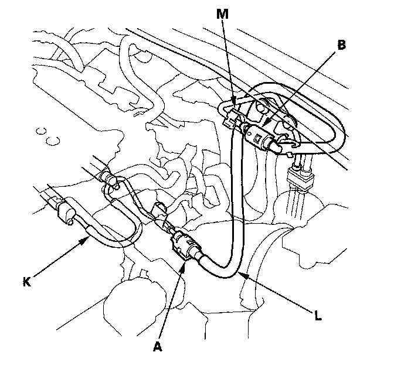
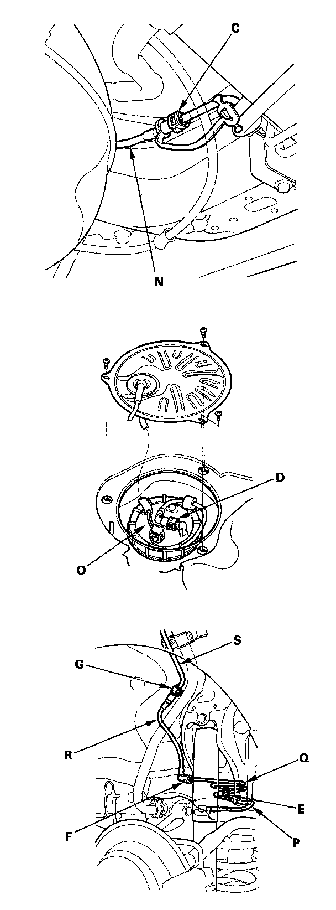
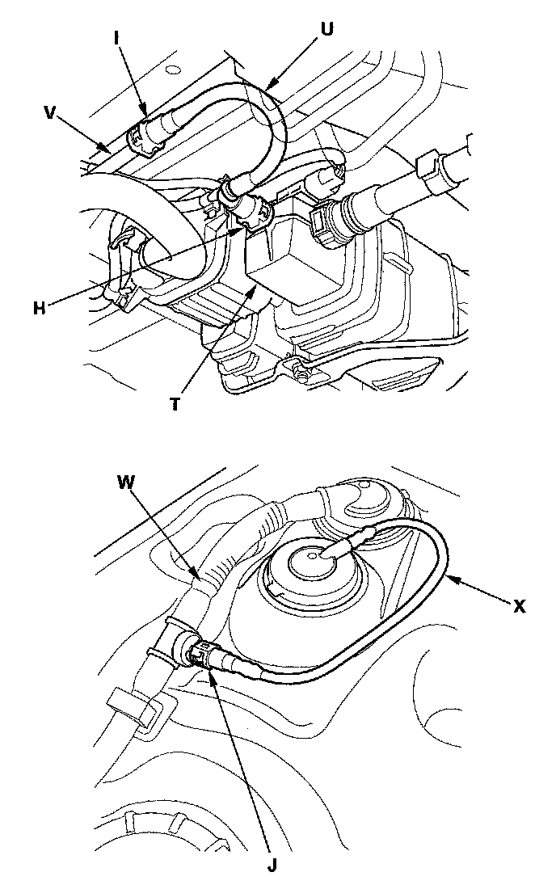
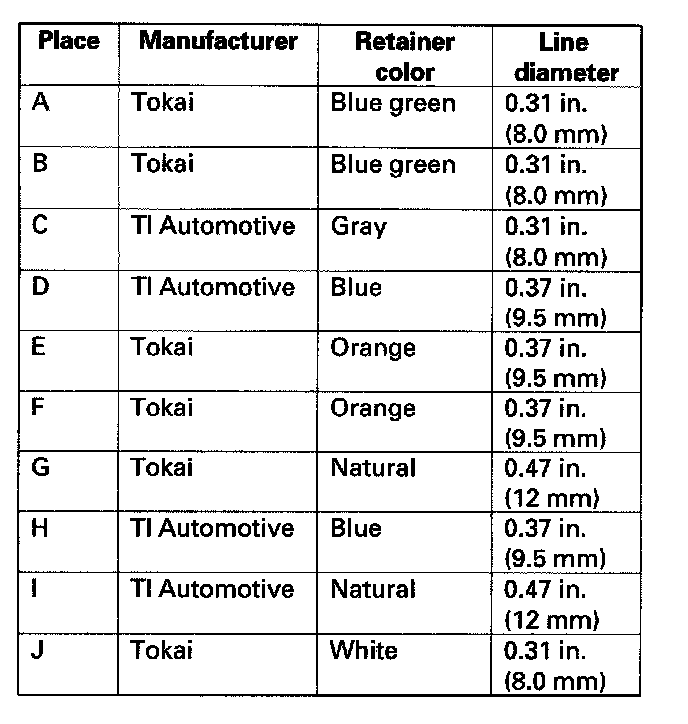

Fuel Line Coupler: Service Precautions
Fuel Line/Quick-Connect Fitting PrecautionsThe fuel line/quick-connect fittings (A), (B), (C), (D), (E), (F), (G), (H), (I), (J) connect the fuel feed hose (K) to the fuel feed hose (L), the fuel feed hose to the fuel feed line (M), the fuel feed line to the fuel feed tube (N), the fuel feed tube to the fuel tank unit (O), the breather tube (P) to the breather pipe (Q), the breather pipe to the breather tube (R), the breather tube to the breather pipe (S), the EVAP canister (T) to the fuel vapor tube (U), the fuel vapor tube to the fuel vapor line (V), the fuel vent tube (W) and the vent shut float tube (X). When removing or installing the fuel feed hose, fuel tank unit, fuel tank or breather tube, it is necessary to disconnect or connect the quick-connect fittings. Pay attention to the following:



- The fuel feed hoses, fuel line, and quick-connect fittings are not heat-resistant; be careful not to damage them during welding or other heat-generating procedures.
- The fuel feed hoses, fuel line, and quick-connect fittings are not acid-proof; do not touch them with a shop towel that was used for wiping battery electrolyte. Replace them if they came into contact with electrolyte or something similar.
- When connecting or disconnecting the fuel feed hoses, fuel line, and quick-connect fittings, be careful not to bend or twist them excessively. Replace them if they are damaged.

A disconnected quick-connect fitting can be reconnected, but the retainer on the mating line cannot be reused once it has been removed from the line. Replace the retainer when:
- replacing the fuel rail.
- replacing the fuel line.
- replacing the fuel pump.
- replacing the fuel filter.
- replacing the fuel gauge sending unit.
- replacing the EVAP purge pipe.
- replacing the EVAP canister.
- replacing the breather pipe.
- it has been removed from the line.
- it is damaged.